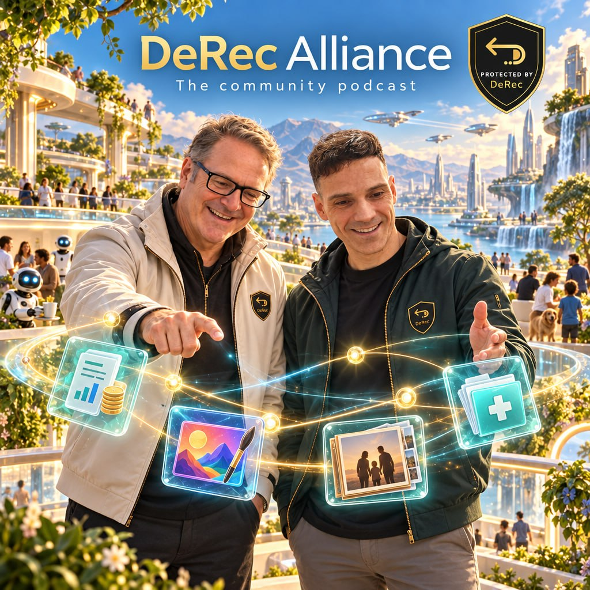
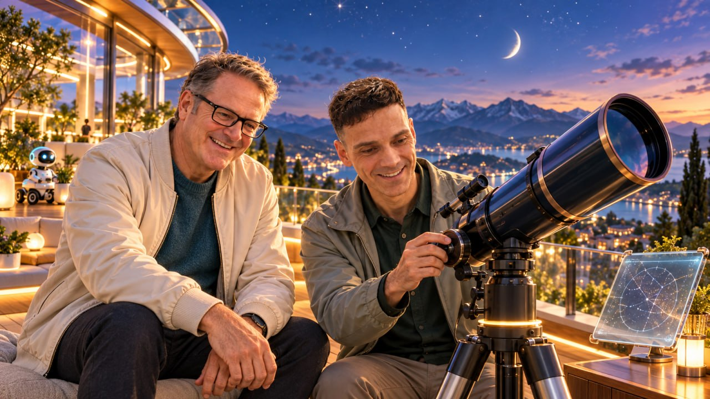

Five seconds, frame by frame
Bar one is the activity, and it changes every episode. Bar two is the ritual, animated once and locked forever. Select any beat to jump the animatic to it.
Meet Tuck
A sea otter who keeps one plain stone in the loose skin pocket under her left forearm, where real sea otters keep a rock. Her friend Pip is a porcelain café robot who never holds one.
| What the ritual shows | What it stands for | Where the picture stops |
|---|
Bruce says once, in Episode 01: “Tuck’s a cartoon. Your helpers are real people you choose.”
Tuck’s year
Each episode’s activity follows the month it airs, so the regulars’ season matches hers. Every plate carries one small sign of tomorrow, and every activity is something a person could do on a good day off.
Fifteen minutes, one question
The standard episode runs 15:00. A narrow question gets 10 minutes and a clinic gets 20. Shorter episodes lose talk, never segments.
Many Hands
16:9, 12–18 minutes, premiered at 11:00 New York time with Bruce in the live chat. The week after each fortnightly contributors call.
Builds the library: evergreen answers that keep finding viewers for years.
Light Work
A 9:16 Short, 30–60 seconds, captions burned in. The question is on screen and spoken in the first second.
Keeps the channel alive between flagships, and any clip that shows what DeRec can do carries its limit line.
Bruce: “Many hands…” Facundo: “…make light work.”
Twelve questions
Proposed dates for host review, America/New_York. Holidays are flagged, and every date moves if the contributors call moves.
A tune in the rhythm of a proverb
D major at 96 BPM, two bars, and the cut to the hosts lands on the final chord at exactly 5.00 seconds. The hook is sung by nobody: a vibraphone asks, a nylon guitar answers, and one real group clap lands on “work”.
The one surprising note is the G♯ on “light”. Over an E chord on a held D it sounds bright, not wrong, and it carries the slightly futuristic lift on its own. The chords go I, II over I, IV, borrowed iv, and home. There is no dominant, so the arrival feels calm rather than pushed.
Synthesized sketches of the specs in the sound brief. The released theme will be played by people.
A beautifully printed book about tomorrow
The restraint of the first package meets the light of the cover. Jade, ink and paper come from the earlier work unchanged. Gilt and sky come from the cover, sampled from its lettering and its sky.
A soft old-style face for the title and for every question, set in italic.
Designed for low-vision readers, so every lower third passes the Grandma test.
Decisions that belong to the hosts
Nothing here is scheduled, uploaded or published. These are the calls that need a yes from Bruce, from Facundo, or from both.
The cover, and the world around it
The square cover set the direction: the Alliance at the top, two friends side by side, and a line of light carrying the things worth keeping, most of which are not money.


Every document
All of it lives on the branch claude/drex-alliance-youtube-series-09gepb in derec-together/.